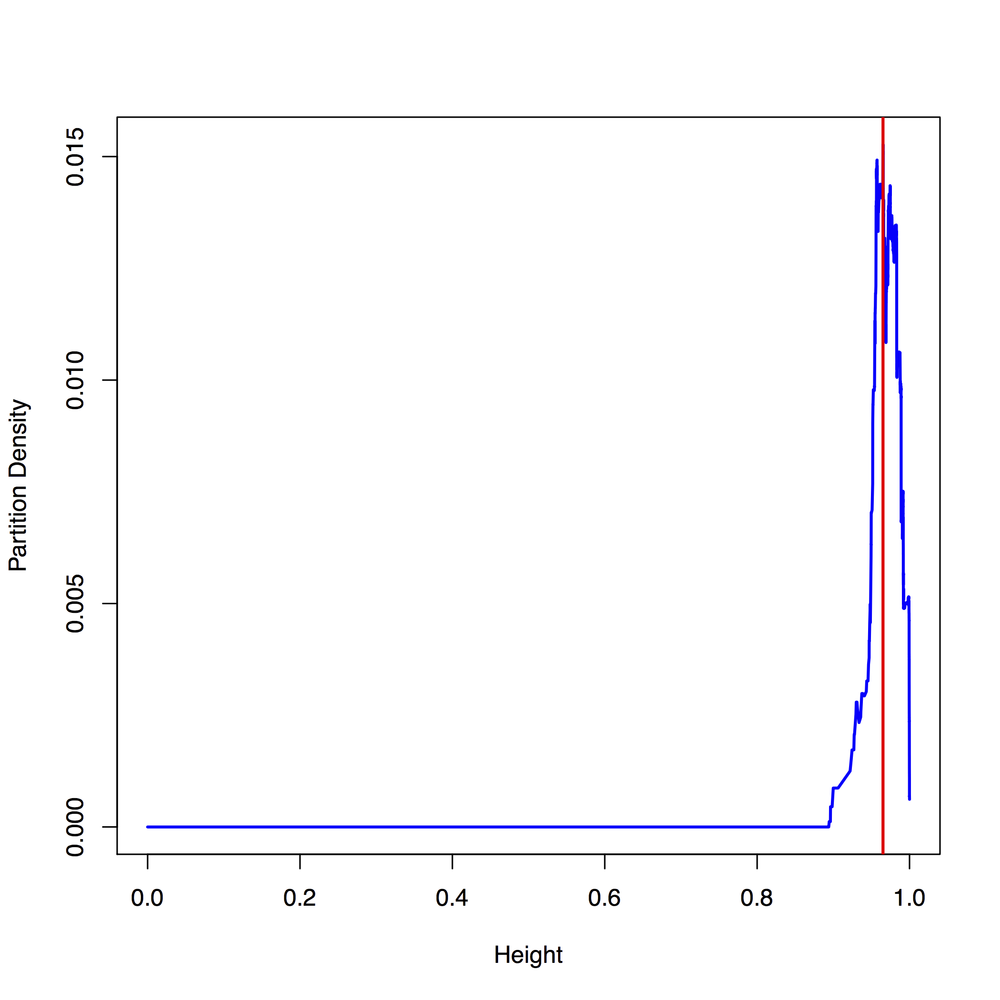

Cluster detection, analysis and visualization
Author: Aaron Brooks / @scalefreegan
You can follow along on Github: http://scalefreegan.github.io/Teaching/DataIntegration/lectures/l2.html
Goals (60 min - 30 slides)
- Clustering in a nutshell: some way to find elements on a graph that are more related to each other than to everything else
- Simple biological and non-biological examples (motivation, e.g. karate club, regulatory "modules")
- Approaches to clustering: Node vs edge clustering, Hard vs soft clustering
- Overview of topics covered / Lab data set
What is a metric?
A nonnegative function g(x,y) describing the "distance" between neighboring points for a given set. A metric satisfies the triangle inequality
$g(x,y) + g(y,z) \ge g(x,z)$
$g(x,y) = g(y,x)$
$g(x,x) = 0$
A formalized way to detect “similar behavior” in data
Weighted Undirected Graph

Spectral Clustering
Some advantages
- Can be solved efficiently by standard linear algebra software
- Often outperforms traditional clustering algorithms such as the k-means algorithm
Luxburg (2007). A Tutorial on Spectral Clustering
Graph Laplacians
$L = D − W$
Wikipedia: Laplacian matrix
Link-community clustering
Yong-Yeol et al (2010). Link communities reveal multiscale complexity in networks
Link-community clustering
Yong-Yeol et al (2010). Link communities reveal multiscale complexity in networks
Link-community clustering
Yong-Yeol et al (2010). Link communities reveal multiscale complexity in networks
Examples
Flavor Network
Yong-Yeol et al (2011). Flavor network and the principles of food pairing
EGRIN2.0
Gene co-regulation network

Brooks and Reiss et al (2014). A system‐level model for the microbial regulatory genome
Conditionally Co-regulated Modules (Corems)
Brooks and Reiss et al (2014). A system‐level model for the microbial regulatory genome
Kernel Network

For more info: Practical 1